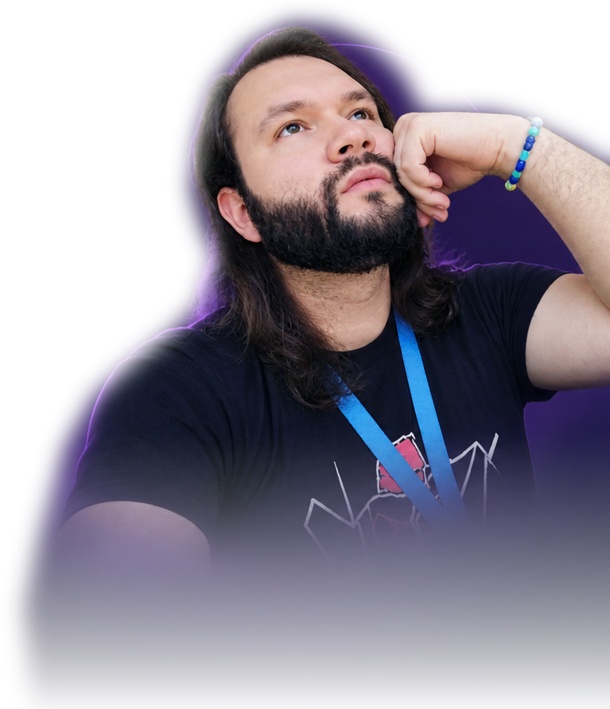

Building solutions,
learning every day.
I'm José Ricardo González Carmona, a Junior Developer interested in frontend, backend and data analysis. I enjoy turning ideas into useful software and growing through hands-on projects.

More than just code.
Curious by nature.
Developer by practice.
My experience working with data and technology has strengthened my attention to detail, problem-solving and ability to learn new tools. I apply that mindset to web development, focusing on clear interfaces, reliable functionality and continuous improvement.
These four projects showcase hands-on practice with frontend interactions, Java fundamentals and API-based applications.
Gaming is more than a hobby 🎮
I am a big fan of video games. One of my long-term goals is to design and develop my own games, combining programming, creativity and interactive experiences.
Technologies & skills.
Technologies I have practiced, studied or used professionally — grouped by area.
Frontend development
HTML5 · CSS3 · JavaScript · DOM · Flexbox · CSS Grid · Responsive layouts · Web accessibility fundamentals
Backend & programming
Java · Python fundamentals · SQL fundamentals · Object-oriented programming · JSON · REST API concepts
Developer tools
Git · GitHub · VS Code · Chrome DevTools · Node.js / NPM fundamentals · IntelliJ IDEA
Data & IT
Data validation · Data analysis · Quality checks · Troubleshooting · Computer hardware · Windows · Technical support
Learning & background.
A transparent overview of training and practical experience. Individual certificates can be added after verification.
Oracle Next Education + Alura Latam
Programming and web-development learning pathway. Specific credentials and completion dates are not listed until verified.
Junior Developer training
Hands-on learning in HTML, CSS, JavaScript, Java and software fundamentals.
Professional data experience
Practical experience validating records, checking data consistency and working across multiple applications.
Certificates & titles
Verified certificates, titles, issuing organizations and dates will appear here when supplied.
Featured projects.
Only my four original repositories. Live demos open the original projects in a new tab; no recreated interfaces.
Let's build something great.
Open to Junior Developer opportunities in frontend, backend and data-related software.